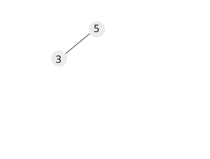
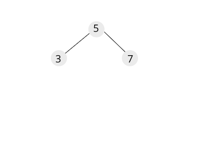
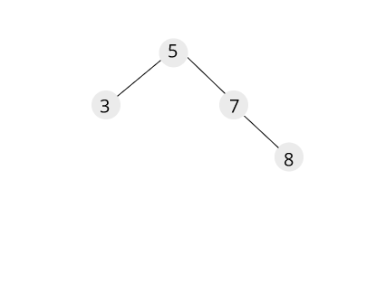
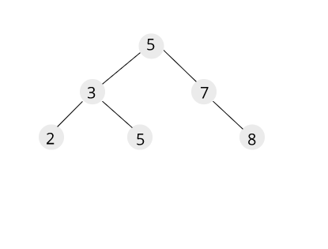

Search trees are data structures that support many dynamic-set operations, including SEARCH , MINIMUM , MAXIMUM , PREDECESSOR , SUCCESSOR , INSERT , and DELETE. Basic operations on a binary search tree take time proportional to the height of the tree. For a complete binary tree with n nodes, such operations run in O(log n).
A binary search tree is organised. Such a tree can be represented by a linked data structure in which each node is an object. In Addition to key, each node contains fields left, right, parent(optional while implementing) that points to nodes corresponding to its left child, its right child, and its parent, respectively. If a child or the parent is missing,the appropriate field contains the value NULL. The root node is the only node in the tree whose parent field is NULL. The keys in a binary search tree are always stored in such a way as to satisfy the binary-search-tree property.
Let x be a node in a binary search tree. if y is a node in left sub-tree of x, then , key_val[y] <= key_val[x]. if y is a node in right sub-tree of x, then, key_val[y] >= key_val[x].
Let's create a binary search tree from given list of integers [5,3,7,8,2,5]. Initially tree is empty so insert 5 into tree, which will be the root node of the tree. 
Inserting 3 into tree. root node is not empty. compares value of inserting node which is less than root node. 3 will be inserted to left of 5.  Inserting 7 into tree. root node is not empty. compares value of inserting node which is greater than root node. 7 will be inserted to right of 5.  Inserting 8 into tree. root node is not empty. compares value of inserting node which is greater than root node. goes to right node of root, which is not empty. compares with it. inserting value is greater than current node, it will be inserted into right node. 
The final tree structure. 
BST insertion is explained in previous paragraph. Let's implement in C++ (C++11).
x//Node Structure.struct node{ int key; struct node *left, *right;};using Node = node;//Function for creating a nodeNode* NewNode(int key){ Node* n = new Node; n->key = key; n->left = n->right = nullptr; return n;}//Utility for insertion Node* Insert(Node* n, int key){ if(n == nullptr) return NewNode(key); if(key < n->key) n->left = Insert(n->left, key); else n->right = Insert(n->right, key); return n;}int main(int argc, char* argv[]){ Node *root = nullptr; root = Insert(root, 5); Insert(root, 3); Insert(root, 7); Insert(root, 8); Insert(root, 2); Insert(root, 5);}Insert has worst case complexity of O(n). In general, time complexity is O(h).
xxxxxxxxxx//Search a value and return node if it exists.Node* Search(Node* n, int key){ if(n == nullptr) return nullptr; if(key == n->key) return n; if(key < n->key) Search(n->left, key); else Search(n->right, key);}Searching in binary search tree has worst case complexity of O(n). In general, time complexity is O(h) where h is height of BST.
The binary-search-tree property allows us to print out all the keys in a binary search tree in sorted order by a simple recursive algorithm, called an inorder tree walk or inorder traversal. This algorithm is so named because the key of the root of a subtree is printed between the values in its left subtree and those in its right subtree.
(Similarly,a preorder tree walk or preorder traversal prints the root before the values in either subtree, and a postorder tree walk prints the root after the values in its subtrees.) These types of traversal also called Depth First Traversal.
xxxxxxxxxx//Inorder Traversal. This will print elements in sorted order.void Inorder(Node* root){ if(root != nullptr) { Inorder(root->left); std::cout << root->key << std::endl; Inorder(root->right); }}xxxxxxxxxx//Preorder Traversal.void Preorder(Node* root){ if(root != nullptr) { std::cout << root->key << std::endl; Preorder(root->left); Preorder(root->right); }}Preorder traversal self explanatory.
Node with minmum value will be leftmost node from given node/root. Traverse the nodes from root/given node to left recursively until left is NULL.
xxxxxxxxxx//Finds Node with Minimum value. From given non-empty node.Node* MinNode(Node* n){ Node* current = n; while(current->left != nullptr) { current = current->left; } return current;}Node with maximum value will be rightmost node given node/root. Traverse the nodes from root/given node to right recursively until right is NULL.
xxxxxxxxxx//Finds Node with Minimum value. From given non-empty node.Node* MinNode(Node* n){ Node* current = n; while(current->left != nullptr) { current = current->left; } return current;}Given a node in a binary search tree, it is sometimes important to be able to find its successor in the sorted order determined by an inorder tree traversal. The structure of a binary search tree allows us to determine the successor of a node without ever comparing keys.
Inorder successor is broken into two cases.
xxxxxxxxxx11/7/ \5 10/9/8Inorder successor of 7 is 8.
xxxxxxxxxx11/7/ \5 10/9/8Inorder successor of 10 is 11.
xxxxxxxxxxNode* FindSuccessor(Node* n, int key){ Node* current = Search(n, key); if(current == nullptr) return nullptr; //If node has right subtree. if(current->right != nullptr) { return MinNode(current->right); } else { //right subtree is null //Find lowest ancestor for which current node is in left // 11 // / // 7 // / \ // 5 8 // Sucessor of 8 is 11 Node* successor = nullptr; Node* ancestor = n; while(ancestor != current) { if(current->key < ancestor->key) { successor = ancestor; ancestor = ancestor->left; } else ancestor = ancestor->right; } return successor; }}There are 3 cases for node deletion for BST, so that we will keep BST property.
xxxxxxxxxx11 11/ /7 7/ \ / \5 10 Delete 8 -> 5 10/ /9 9/8
xxxxxxxxxx11 11/ /7 7/ \ / \5 10 Delete 9 -> 5 10/ /9 8/8
xxxxxxxxxx11 11/ /7 8/ \ / \5 10 Delete 7 -> 5 10/ /9 9/8
Node* Delete(Node* n, int key){ if(n == nullptr) return nullptr; if(key < n->key) n->left = Delete(n->left, key); else if(key > n->key) n->right = Delete(n->right, key); else { if(n->left == nullptr && n->right == nullptr) { delete n; n = nullptr; } else if(n->left == nullptr) { Node* temp = n; n = n->right; delete temp; } else if(n->right == nullptr) { Node* temp = n; n = n->left; delete temp; } else { //Find Min Node in Right Subtree Node* temp = MinNode(n->right); //Replace the key value n->key = temp->key; //Delete the min node. n->right = Delete(n->right, temp->key); } } return n;}